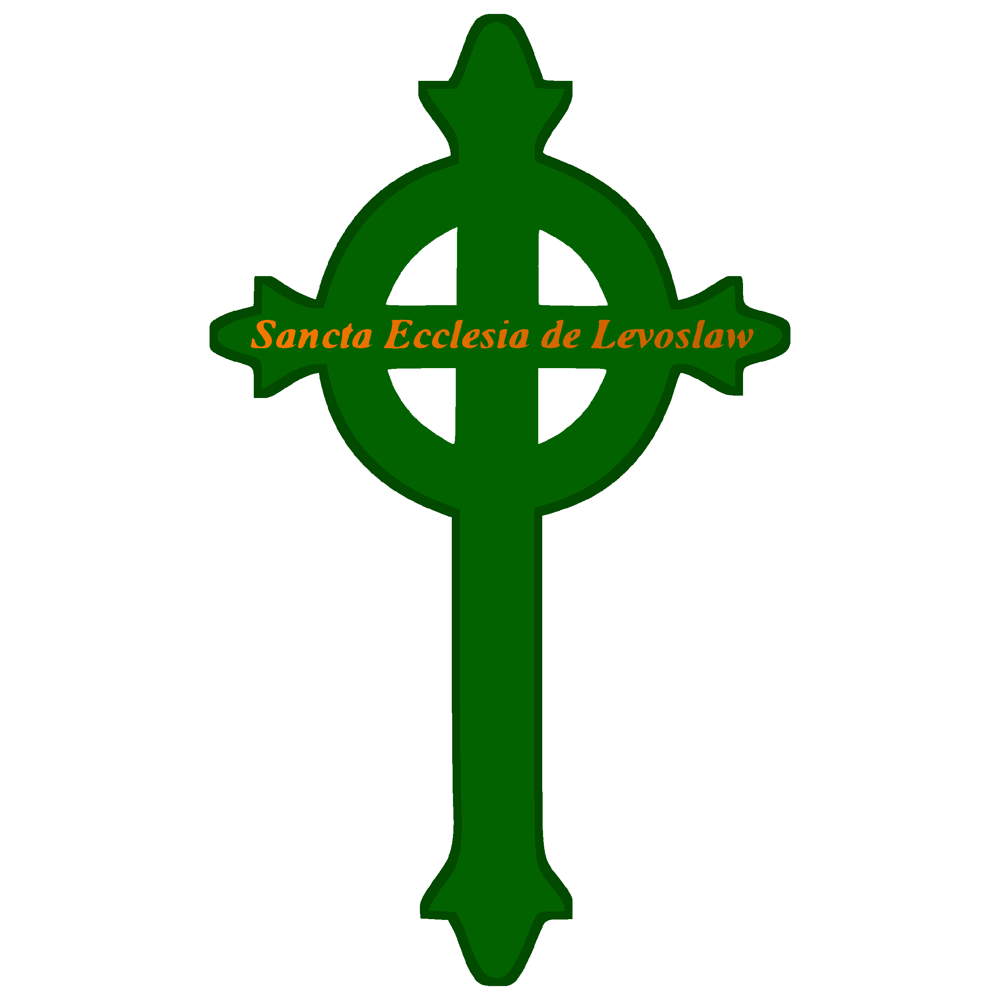

Państwa, Frakcje i Organizacje w Feloroście
Poniżej znajduje się lista państw, organizacji i frakcji występujących w uniwersum Felorostu.
Państwa

Korona Krulestwa Multikont
Ojczyzna Multikont, Główne Mocarstwo
Ojczyzna Multikont, Główne Mocarstwo
Organizacje

Święty Kościół Lewosławia
Wyznawcy Bogów Felorostu
Wyznawcy Bogów Felorostu
Demokratyczny Wolny Związek Zawodowy Multikont
Intergalaktyczna Organizacja Chroniąca Prawa Multikont
Intergalaktyczna Organizacja Chroniąca Prawa Multikont